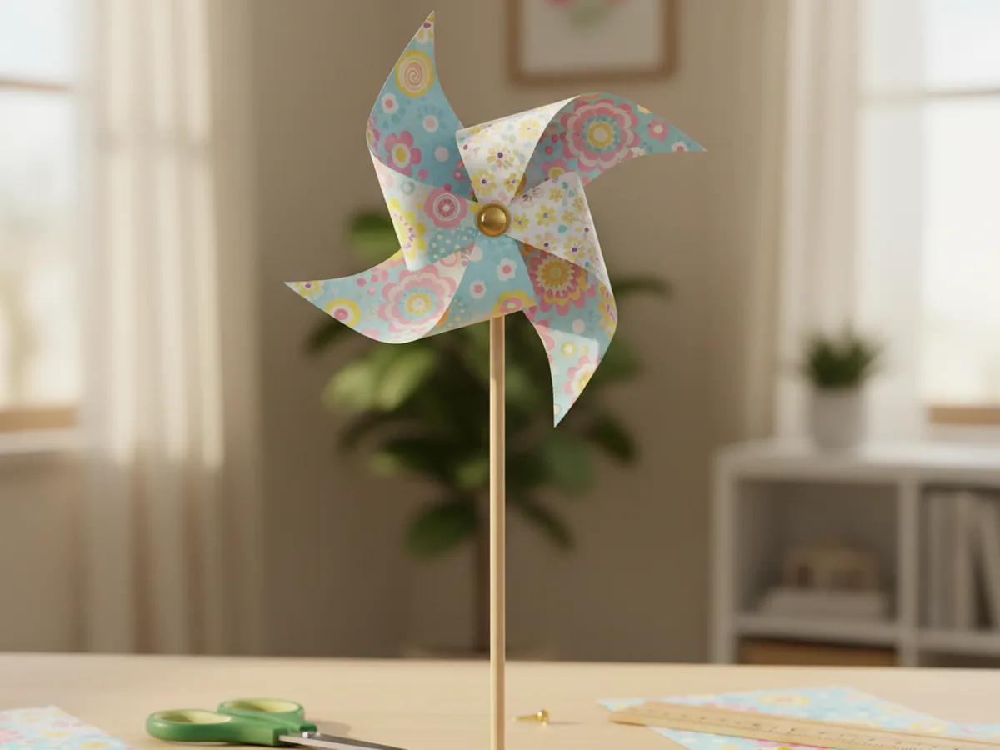
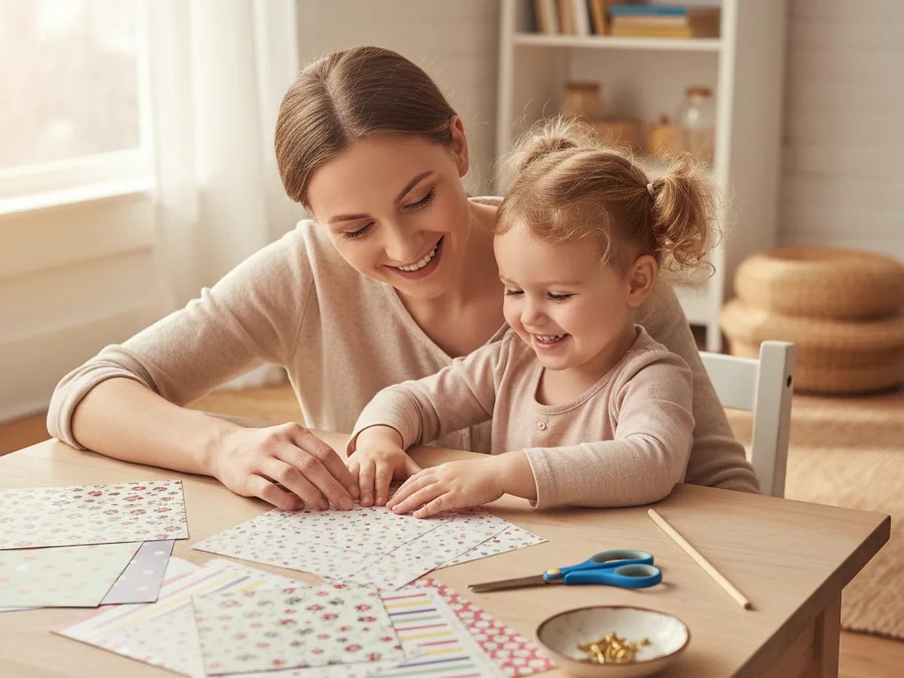
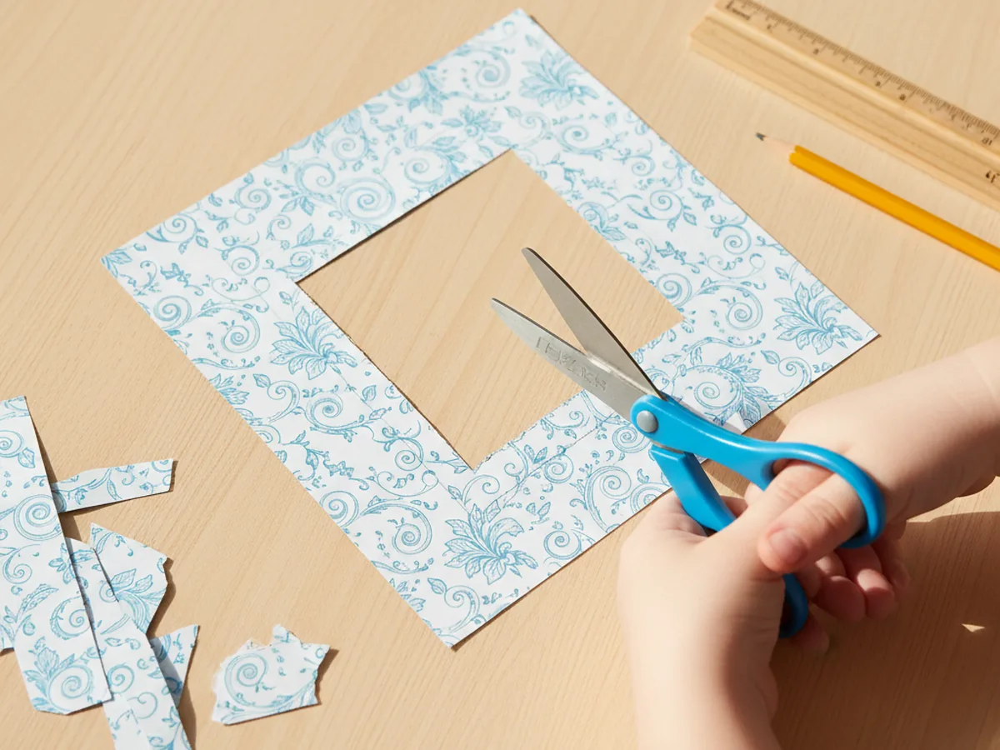
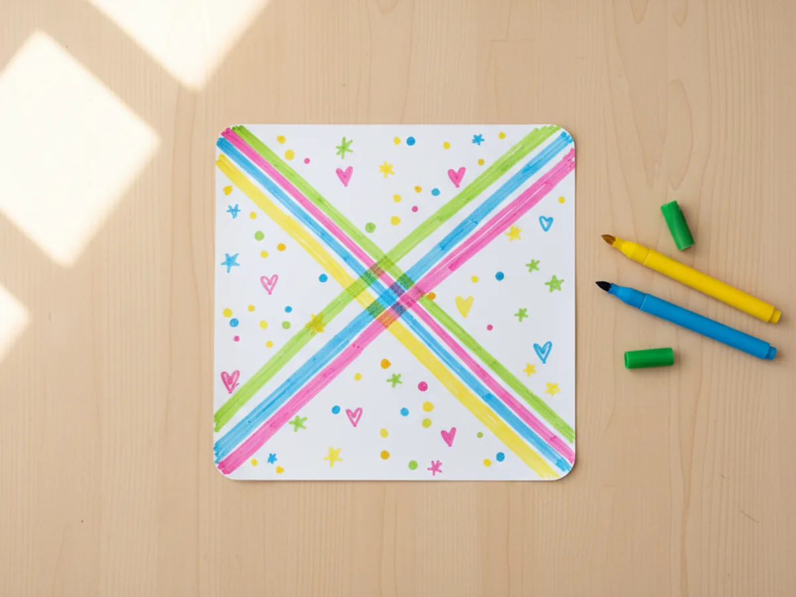
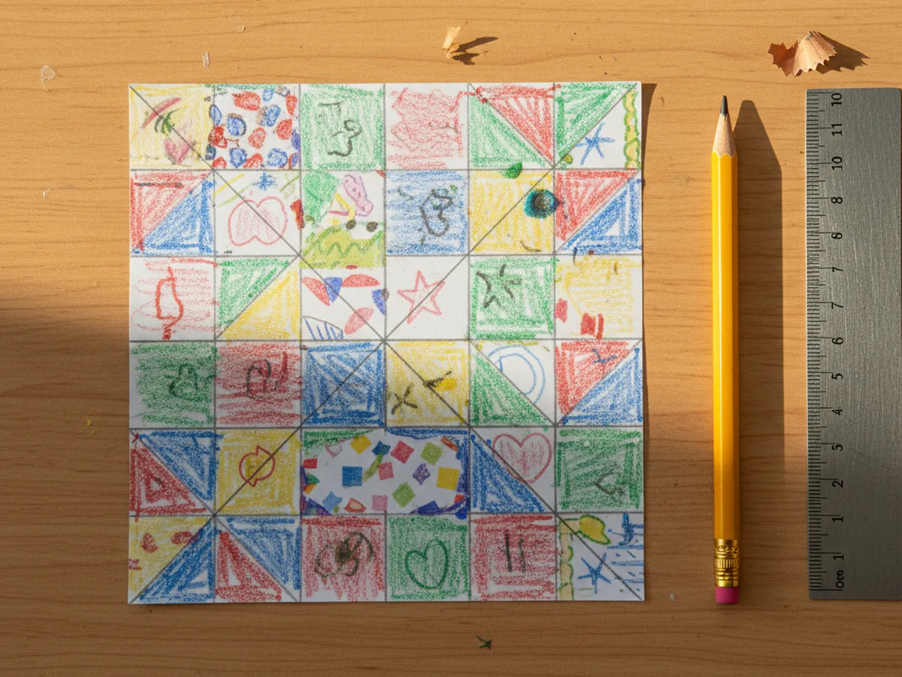
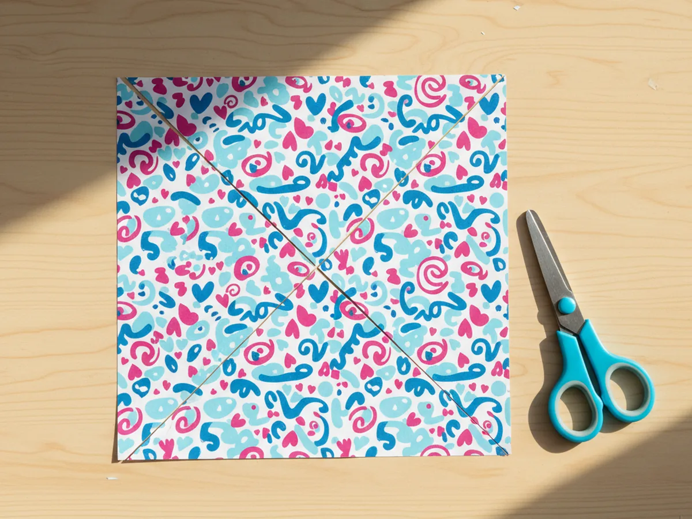
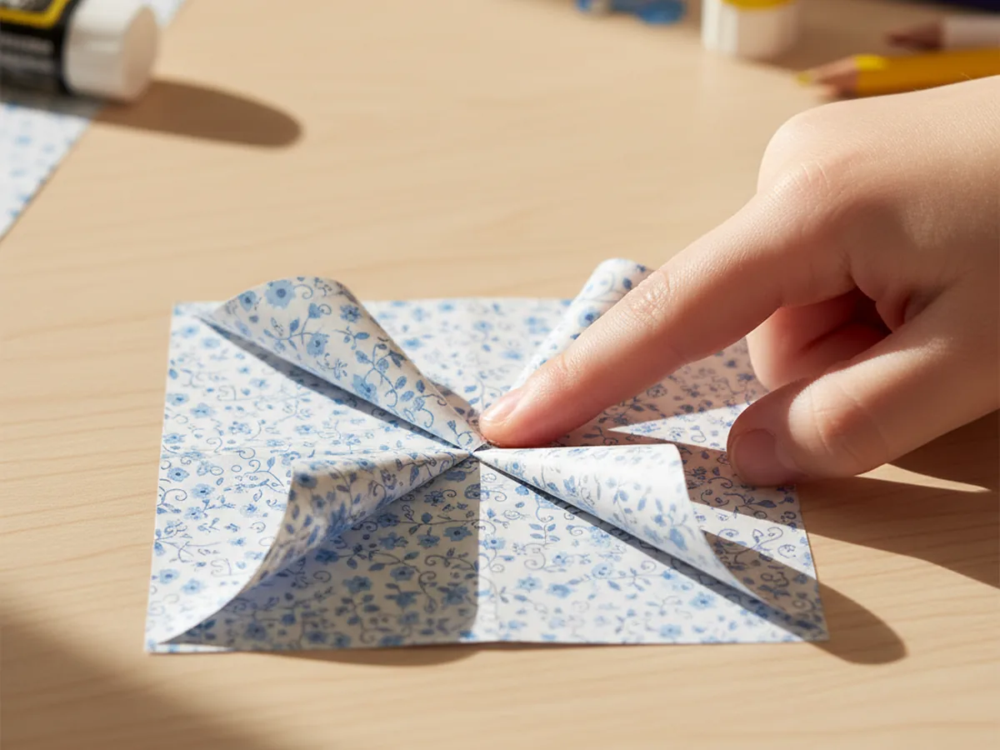
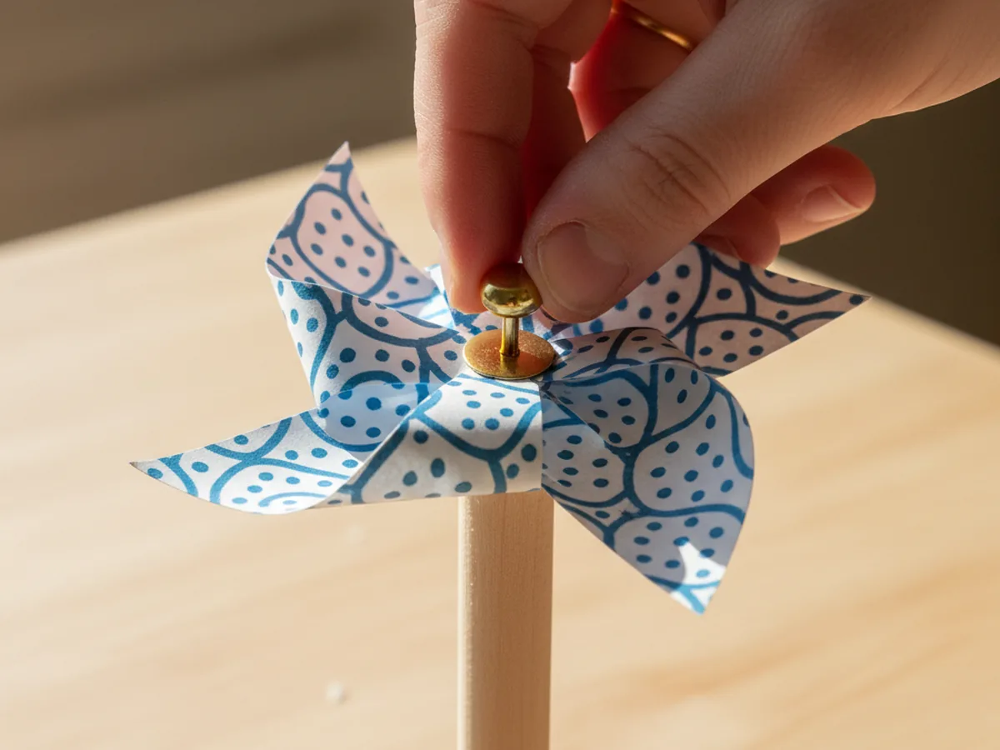
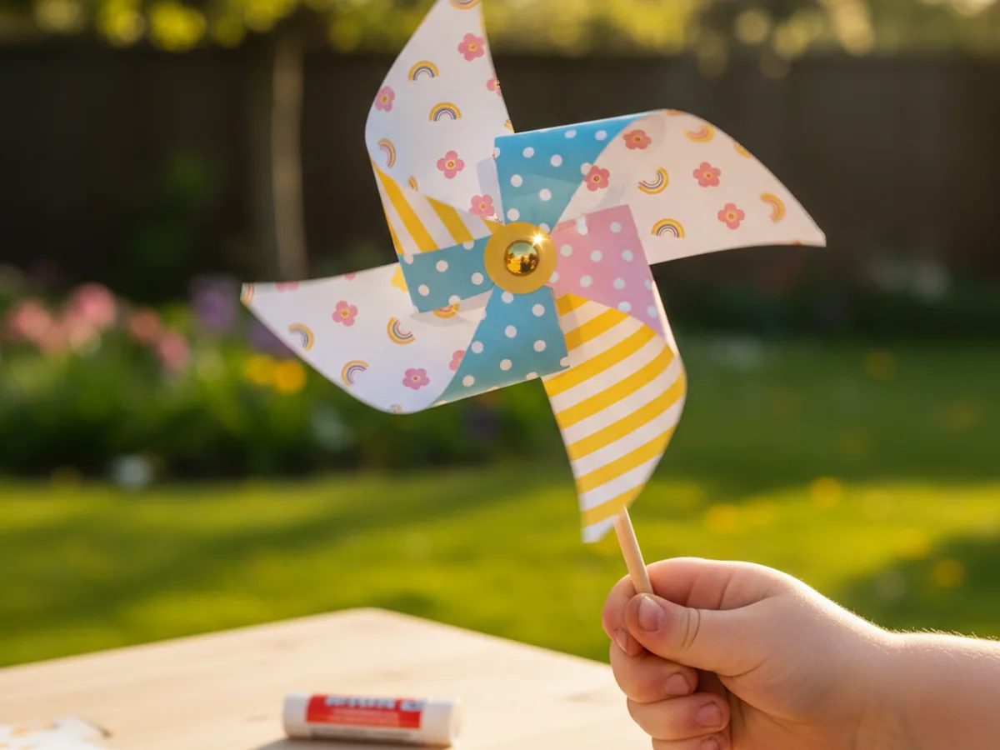

There is something quietly magical about a pinwheel. The moment your child blows on it and watches the colors blur into a soft spin, you can see the wonder on their face. This paper craft pinwheel uses just a square of paper, a brad fastener, and a little wooden stick, and the whole thing comes together in about thirty minutes. 🌸
What makes this craft so lovely is that the finished result actually moves. Most paper projects look pretty on a shelf, but this one becomes a tiny toy your child will carry around the yard or hold up to a fan. It is gentle, beginner-friendly, and gives back a sweet little burst of joy as soon as it starts to spin.
Why Kids Love This Craft
Kids love this paper pinwheel craft because it does something. Folding paper into a flat shape is fun, but pinning it onto a stick and watching it actually twirl in the breeze is a completely different kind of thrill. There is a small surprised giggle that comes out of almost every child the first time their pinwheel catches the wind, and that little moment is honestly the whole reason to make it.
It is also a wonderful project for little hands. Cutting a clean square teaches scissor control. Lining up the diagonal cuts gives a gentle introduction to symmetry. Folding the four corners gently toward the center is a soft, careful motion that builds patience and fine motor confidence. Even the brad pushing through the paper feels like a tiny grown-up moment for a young child.
Best of all, this simple paper craft pinwheel stretches into outdoor play once it is finished. You can take it out to the porch, run with it across the yard, hold it up at the open window, or stick a few in a flower pot. The craft does not end when the glue dries, which is what makes it so special.

What You'll Need
Here is everything you need to make this paper craft pinwheel at home. Set the supplies out on the table before your little one sits down so the whole craft flows smoothly from start to finish.
- Double-Sided Patterned Scrapbook Paper (24 sheets, 12x12 inch), gives the pinwheel a cute pattern on both sides as it spins.
- Crayola Construction Paper (240 sheets, assorted colors), a great budget option if you would rather use solid bright colors.
- Fiskars Pointed-Tip Scissors for Kids, perfect for cutting the diagonal slits cleanly.
- Bonsicoky Mini Brad Fasteners (100 pcs, gold), the round-head brads hold the pinwheel together and let it spin on the stick.
- Woodpeckers Wooden Dowel Rods (1/4 x 12 inch, 50 pack), the perfect size for the pinwheel handle.
- Crayola Broad Line Markers (10 classic colors), for decorating the paper before folding.
- A pencil and ruler, for drawing the diagonal lines from corner to corner.
- A small piece of tape or a glue dot, helpful for securing the brad legs flat on the back of the dowel.
Step-by-Step Instructions
This paper craft pinwheel step by step is genuinely simple, even for a four-year-old with a little help. Go slowly through each part and let your child do as much of the cutting and folding as they comfortably can.
Step 1: Cut a Square of Paper
Start with one sheet of patterned scrapbook paper or a piece of bright construction paper. Use a ruler and pencil to mark out a perfect six-inch square, then cut along the lines carefully. A square is essential for this paper craft pinwheel because uneven sides will make the pinwheel wobble or refuse to spin evenly.
If your child is younger, pre-cut the square so they can focus on the more exciting steps later. A slightly imperfect square is fine, but try to keep the corners as close to right angles as possible.

Step 2: Decorate Both Sides
If you are using plain construction paper, this is the moment for your child to make the pinwheel really their own. Let them color both sides with markers, draw simple shapes, add stripes, or stick on a few small stickers. Both sides of the paper will be visible while the pinwheel spins, so decorating front and back makes the finished motion much more colorful.
If you started with double-sided patterned paper, you can skip this step entirely or just let your child add their initials in one corner. This little personal touch makes the paper pinwheel craft feel extra special.

Step 3: Draw the Diagonal X
Place the square flat on the table with the back side facing up. Use a ruler and a pencil to lightly draw two diagonal lines from corner to corner, so they cross in the middle and form a big X across the paper. Press lightly so the lines do not show through to the decorated side.
These two lines are your cutting guides for the next step. Without them, it is very easy for little hands to cut too far and slice straight through the middle of the pinwheel.

Step 4: Cut Along the Diagonals
Now carefully cut along each diagonal line, starting from a corner and moving toward the center. Stop cutting about one inch before you reach the middle of the square. This is the most important detail of the whole craft. If the cuts meet in the middle, the paper will fall apart into four triangles. Stopping early leaves a small uncut center that holds the pinwheel together.
Repeat for all four corners, so you end up with eight loose triangular points and one small intact circle of paper in the very center.

Step 5: Fold the Points Into the Center
Here comes the part where it suddenly looks like a real paper craft pinwheel. Pick up one corner of the paper and gently fold the tip into the center of the square, without creasing the fold flat. Hold it in place with one finger and pick up every other corner around the square, folding each one in the same way so the tips meet on top of each other in the middle.
You should end up with four soft, curved petals coming together at the center. Resist the urge to crease the folds. The whole pinwheel needs that gentle curve to catch the wind and spin properly.

Step 6: Add the Brad and the Stick
Holding the four folded tips together in the middle, push a gold brad fastener straight through all four points and through the small intact center of the paper at the back. Now press the back of the paper against the top of a wooden dowel and push the brad legs through the wood as well. The brad acts like a tiny axle that lets the paper craft pinwheel spin freely on the stick.
If your dowel is hard and the brad cannot pierce it easily, use a thumb tack to make a small starter hole first, then push the brad through.

Step 7: Open the Brad and Test the Spin
Flip the dowel over and gently bend the two metal legs of the brad flat against the back of the wood. This anchors everything in place. To make sure the pinwheel can spin freely, do not pull the brad too tightly through the paper. The folded tips need a tiny bit of room to move around the brad. ⭐
Blow softly on the front of the paper craft pinwheel and watch the colors blur into a happy spin. Most kids burst into giggles the moment it actually works, and that little reaction is the whole reason this craft is so worth making. 💨

Variations to Try
Garden Stake Pinwheels: Make three or four paper craft pinwheels using outdoor weatherproof cardstock and longer wooden dowels, then stick them right into a flower pot or garden bed. They look adorable lined up along a planter and bring a cheerful, breezy feel to any porch.
Heart-Shaped Pinwheel: Cut the corner tips into rounded heart shapes before folding so each petal becomes a soft heart instead of a triangle. This version is especially sweet for Valentine's Day or Mother's Day and feels a little more delicate.
Number or Letter Pinwheel: Have your child draw one big number or letter on each of the four corners of the square before folding. As the pinwheel spins, the letters or numbers blur into a fun visual puzzle. This is a lovely way to turn the craft into a gentle learning moment for preschoolers.
Final Thoughts
This paper craft pinwheel tutorial is one of those projects where the result feels almost like a tiny gift. It uses just a few basic supplies, takes about half an hour, and ends with a moving little toy your child will hold up to every fan and open window in the house. More than the finished pinwheel, though, it gives the two of you a sweet, screen-free moment of making something together that actually comes to life. 🌬️
If your little one ends up with a whole bouquet of pinwheels around the house, I would love to see them. Pin this tutorial on Pinterest so other craft-loving mamas can find it easily. Happy crafting!
More Crafts You'll Love
If your child loved making this paper pinwheel, they will adore these other simple paper crafts that turn into real little toys: